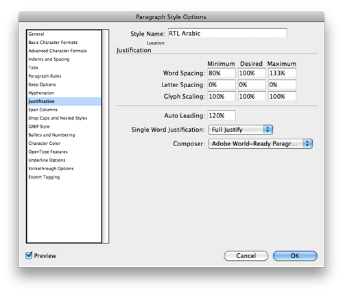

Using Arabic in InDesign CS5 without InDesign ME
Nearly four years ago, I posted a workaround for InDesign CS3’s lack of support for RTL support. The only way to get proper Arabic or Hebrew text back then was to type backwards—something trivial (and scriptable) for Hebrew, but far more complicated for Arabic, with all its different letter forms that change depending on their position in the word. Rather than type backwards, you had to manually insert glyphs from the glyphs panel backwards. While this was extraordinarily tedious, it worked for times when you only needed to deal with a few words—maybe a short sentence.
For my job I’ve been using InDesign CS3 ME with Tasmeem and have fallen in love with the super advanced typographic tools that it provides. But, I’m not planning on keeping that job forever (I’m graduating in less than a year!), and I don’t want to go back to hunting for glyphs. I’ve been spoiled :)
I heard rumors that CS4 and CS5 had a mysterious RTL editing mode that was only accessible through scripting, but I was in Egypt for both launches and wasn’t able to get the educational upgrade. I finally upgraded to CS5 a couple days ago and immediately got to work figuring out this rumored Arabic mode.
Starting with CS4, Adobe began including a new “world ready” paragraph composer, which provides many of the same typographic controls offered by Winsoft’s Middle Eastern editions. However, CS4 shipped before Adobe could polish off any of the controls. The internet world hoped that there’d be some new world ready panel for CS5, but to no avail. The world ready composer was included (and improved?) with CS5, but is still mostly inaccessible.
Unless you do a cool trick :)
You can programmatically create paragraph styles that use the world ready composer, allowing you to typeset Arabic, Hebrew, Thai, Devangari-like languages, and a ton of other more complex scripts. Here’s how you can enable native Arabic typography inside CS5 (courtesy of Thomas Phinney):
- Download these scripts by Thomas Phinney and Peter Kahrel and install them in your script folder.
- Run the “r2l Paragraph Style Arabic” script from the Scripts panel. A new paragraph style named “RTL Arabic” should appear in your Paragraph Styles panel.
- Check the style settings and verify that the “Adobe World-Ready Paragraph Composer” is being used for the style.
 - Start using Arabic text!
- Bonus: To use the composer in other documents you can either run the script again or just copy the style. The composer is activated by the style. Theoretically you could save the Arabic style to a new template and never have to run the script again.
This is definitely not a full replacement for Winsoft’s CS5 InDesign ME, since it doesn’t give you any graphical control over kashidas, digits, diacritic positions, or any of the other more detailed options available in the world ready composer. You can edit the script, change the options around, and create a new style, but you’d need to know the API for the world ready composer. Phinney’s script, for example, sets the default digits for the style as Arabic digits with ps.digitsType = DigitsTypeOptions.arabicDigits;. If you knew the option for Farsi-style numbers, you could edit the script. Unfortunately the whole composer is completely undocumented and unsupported. This site includes many of the hidden options—you’d just need to guess about how to use them in the script. Maybe Adobe will finally make all these options accessible in CS6?
There are a couple options for more graphical control over the hidden settings, but they cost money. idRTL created a plugin that provides a useful panel to edit all the hidden Middle Eastern settings. It’s $50 and says it’s made for CS4, although I’m assuming it’ll work with CS5 too. Word Tools creates a similar panel, costs $100, and supports CS5.
So, even though activating the world ready composer can be a little tricky, it’s a fantastic little trick that lets you use real RTL text without tedious backward typing.